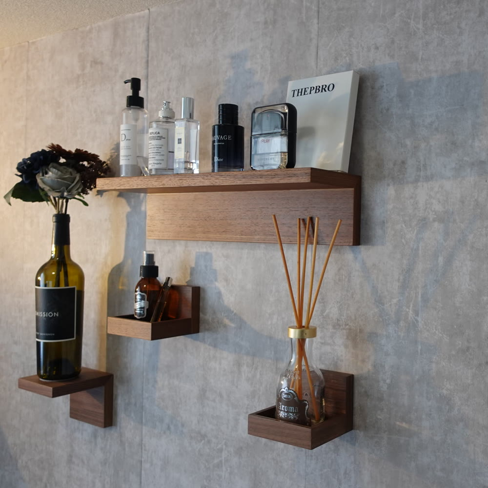
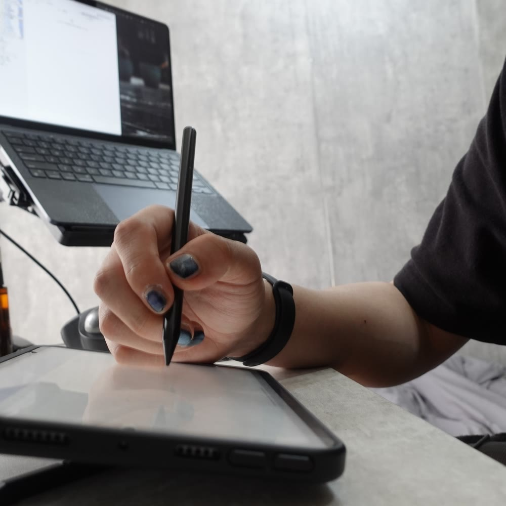
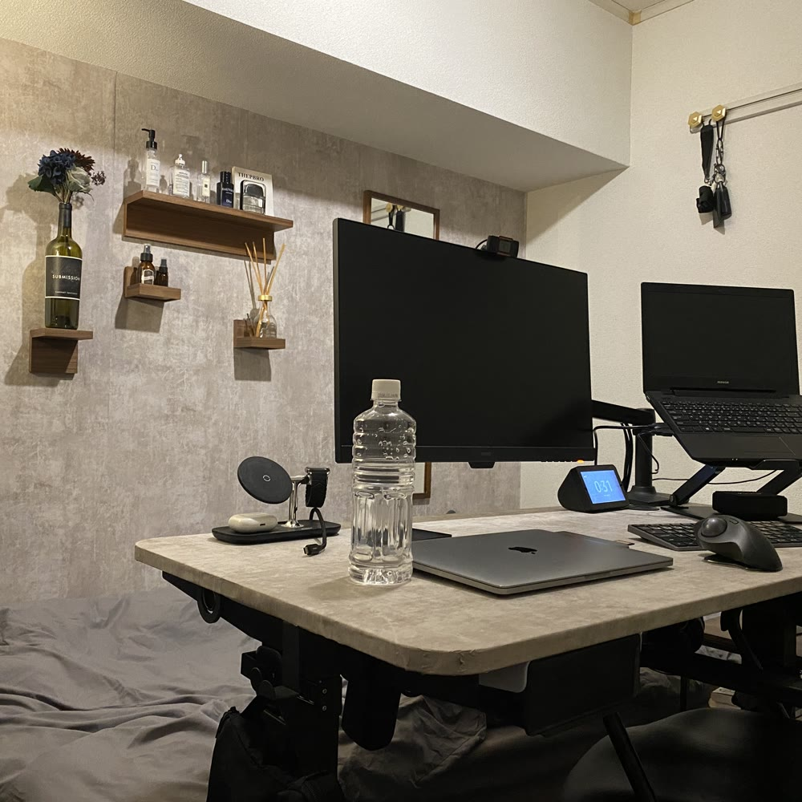
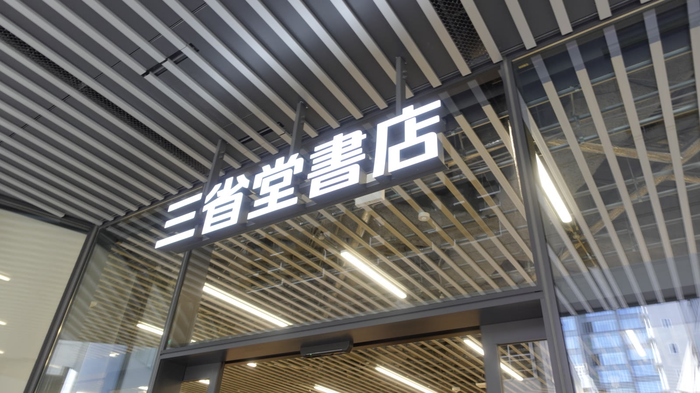
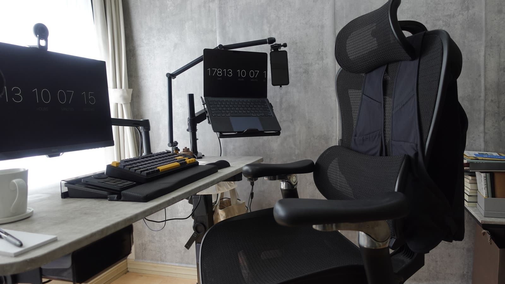
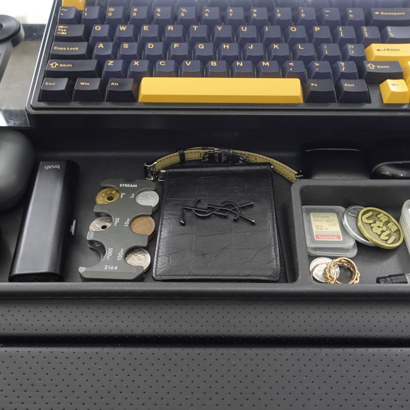

youtube ／ 2022.12.14 —
26 08 11
youtube ／ 2022.12.14 —
26 08 11
間取り
rooms発信している場所と、いまそこにあるもの。
01
YouTube（本編）登録者 6,160 ／ 動画 253本
- 【悪魔のマットレス】ベッドから出られなくなりました。2026.08.08
- 整理術不要のバックパック｜見た目はオタク。使うと可愛い。2026.08.02
- MacBookの入るスリングバッグが快適過ぎた。2026.07.31
- 【い】日本で23番目くらいに雑なデスクツアー｜2026/07/092026.07.08
- 【ゆる回】最近買った"ちょっと変なもの"5つ紹介します2026.05.01
- 情報皆無 Vlog｜TGS 20252026.02.07
- 初めての東京ゲームショウが想像以上だった話2026.01.11
- 「一生モノ」は、名詞ではなく動詞だった2026.07.26
- 【買い逃し注意】プライムデーセールの狙い目まとめ｜20262026.07.11
- 「会話」をやめ、「発注」を始めよう2026.05.29
- 【Amazonセール】おすすめ品｜〜2026/06/022026.05.28



open ↗ 05 持ちもの15点 ／ 4分類- かばんまわり3点
- 手で書くための道具4点
- 持ち歩く机4点
- 腰まわり4点
数値は YouTube Data API 実測（2026.08.11 時点）。登録者数はYouTubeの仕様により概数で表示されます。
かばん
bags回ごとの中身は、それぞれのページに。日付は動画を公開した日。
01tomtoc アーバンEX T77
26 08 02中身 →
02tomtoc Explorer T21
26 07 31中身 →
032wayバッグ｜iPad mini編
26 05 24中身 →
04読書かばん その２
26 05 17中身 →
05読書かばん
26 04 19中身 →


持ちもの
things動画で紹介して、そのまま日常に残ったものだけ。日付は、その道具を動画で紹介した月。
かばんまわり3手で書くための道具4
持ち歩く机4腰まわり4

机の上のトレイ。持ち出すものはここから選んでいる。26 03
StandardProductsスマホショルダー（BL）
DELFONICSロルバーン ポケット付メモ ミニ
AppleiPad mini（第6世代）
パイロットジュースアップ4 0.4
LoopExperience 2（耳栓）
TISURチタン キーホルダー ベルトクリップ
※ 商品リンクにはAmazonアソシエイトを含むアフィリエイト広告が含まれます。価格・在庫はリンク先をご確認ください。
お仕事のご相談
動画／note記事での紹介。メディア掲載：ねとらぼ（ITmedia）・Yahoo!ニュース配信